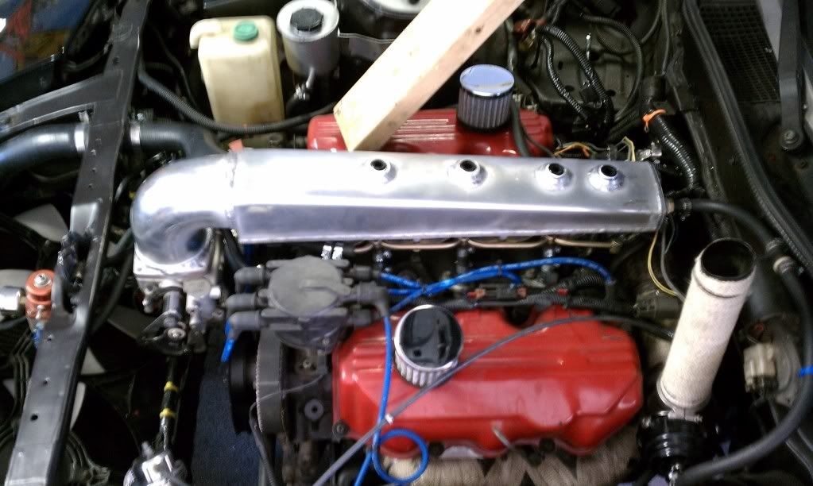
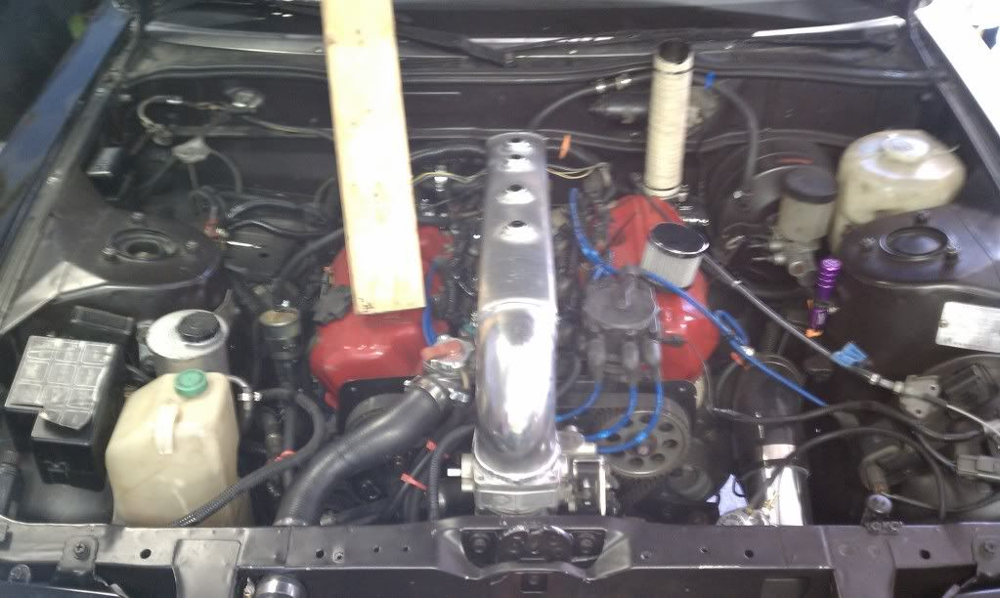
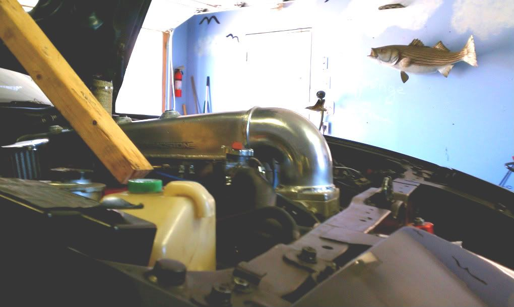

-



It's not practical
It's not necessary
It requires cutting the hood
I've gained access to fuel injection components w/o removal of upper intake
Removable as a single piece
No i didn't consider volume
It's sweet as hell :OO3
Total estimated cost
Throttle body: $25.00
Treadstone End tank and elbow: $127.35
Pegasus 1/2NPT & 3/8NPT Bungs: $51.15
Misc. Tools for pre-fab w/plugs & fittings: $50 + existing owned tools
Cleaning, Decking surfaces, welding: $185.00
Est. total $438.50 + supplies and time to cut the hood
Specs:
25.37" from butt to front of elbow
3.75" from floor plate to highest point + 1.37" flange
3.5" wide
M8x1.25 exhaust stud used for foremost bolt, original bolts used in remaining 4 locations
*Will follow up with comical hood exiting component pics
See here for TEH CLOWN PIPE -
Your glory is dampened by your choice of organic hood-prop.
:nanan?re
j/k..Frickin sweet man, nice workmanship.
84 AE/Shiro #683/Shiro #820/84 Turbo -
Nice work!
Got any pics with the hood shut to show the needed cutting? -
:lol: :lol: Like nothing I have seen before. Looks pretty cool man! And neat choice to use an intercooler endtank :lol: Respond back with your impressions on how it performs! Good work. -
You say organic, i say "going green!"
No pics of the hood yet, i just picked it up today.. it might be a bit until i get to that
Endtank is just a few letters away from Intake :-) it's been pretty straight forward to piece it together, there's two 3/8NPT bungs at the rear for vac reference, one dedicated to the brake booster and another to the possible vacuum block, i might be able to reference two vacuum ports on the TB if all works out and not have to worry about a block -
Looks Good to me, wich throttle body did you go with? Looks like a Q45.http://www.youtube.com/user/onefast87 -
It looks like a Q45 because the plenum is so SMALL! :nanan?reonefast87 wrote: Looks Good to me, wich throttle body did you go with? Looks like a Q45.
On a side note, isn't there one more bolt that you have to get to on the front of the intake manifold? Can you still get to it?85 Z31 6.0 LSX turbo 766whp/792wtq
04 GTO, LS6, big cam, porting, N20… underway for summertime daily driver. -
Meh, that one's not needed. It's optional--like some of the head bolts I couldn't find for my build.BLOZ UP.com
It is not recommended to confirm proper installation by driving into walls or other barriers as this could cause personal injury or damage to the vehicle. -
Looks cool. Curious why you didn't consider volume?
-
SATAN, I know you produce Q45 TB intakes, do you have any suggestions about the TPS? See "specs" about the forward most bolt ( i used an exhaust stud, M8x1.25)
Q45 90/85mm throttle body. Have to figure out TPS, and from search results.. Locate a 240SX throttle cable, than mount a throttle cable bracket, finish the cold side IC piping w/P60 MAFS to TB
I didn't consider volume 'cuz fuuu that, as long as it cranks and fires.. that's my mind set right now. Also, the smaller volume should help with sensitivity from the large TB, even if the linkages are stepped it should help smooth the low end out and improve high end flow.
Got a few other things thrown on my plate right now, so the projects going on hold until further notice, at the least two weeks.. WTF?! i can almost hear it running now! :-? -
What suggestions did you need? You take a Maxima TPS sensor with the potentiometer inside. Then you clip the wires and reverse the polarity to make it read right.88sinZ wrote: [b]SATAN, I know you produce Q45 TB intakes, do you have any suggestions about the TPS?
Not sure why you would need the 240sx throttle cable. I am still running my OEM z31 cable.85 Z31 6.0 LSX turbo 766whp/792wtq
04 GTO, LS6, big cam, porting, N20… underway for summertime daily driver. -
Pretty damn cool. I love how it still has the Treadstone on the side.Originally posted by AZ-ZBum -
Is that a wastegat dump tube? I did that once. It was awesome.BLOZ UP.com
It is not recommended to confirm proper installation by driving into walls or other barriers as this could cause personal injury or damage to the vehicle. -
Good luck, A+ for style and originality so I hope it works, throttle response should be great. Individual cylinder distribution? Shutup R
-
SATAN wrote:
What suggestions did you need? You take a Maxima TPS sensor with the potentiometer inside. Then you clip the wires and reverse the polarity to make it read right.
Not sure why you would need the 240sx throttle cable. I am still running my OEM z31 cable.
Thanks, that's exactly what i needed to know
To fit well the Throttle cable is about 3-4" too short, and people have said the 240sx cable is longer and uses similar mounts

Copyright © 2006–. All rights reserved. Privacy Policy